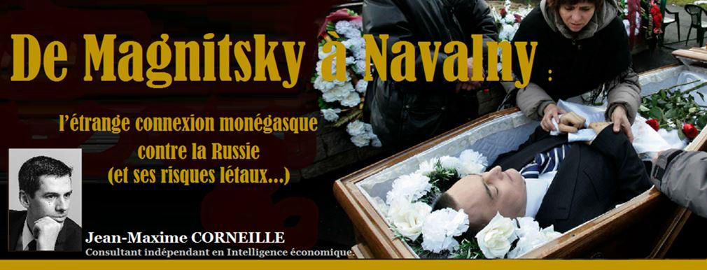
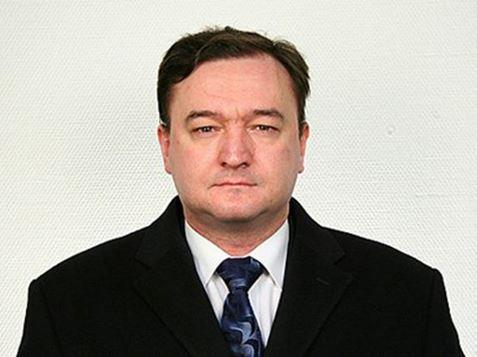
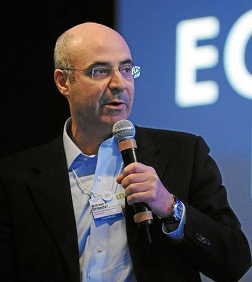
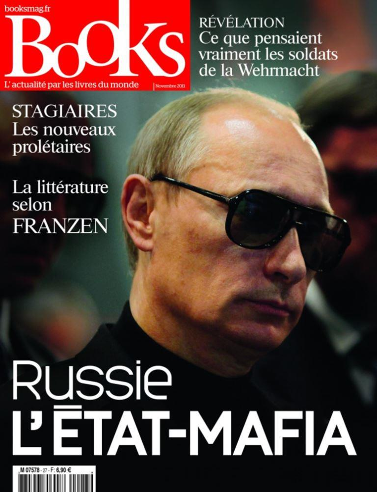
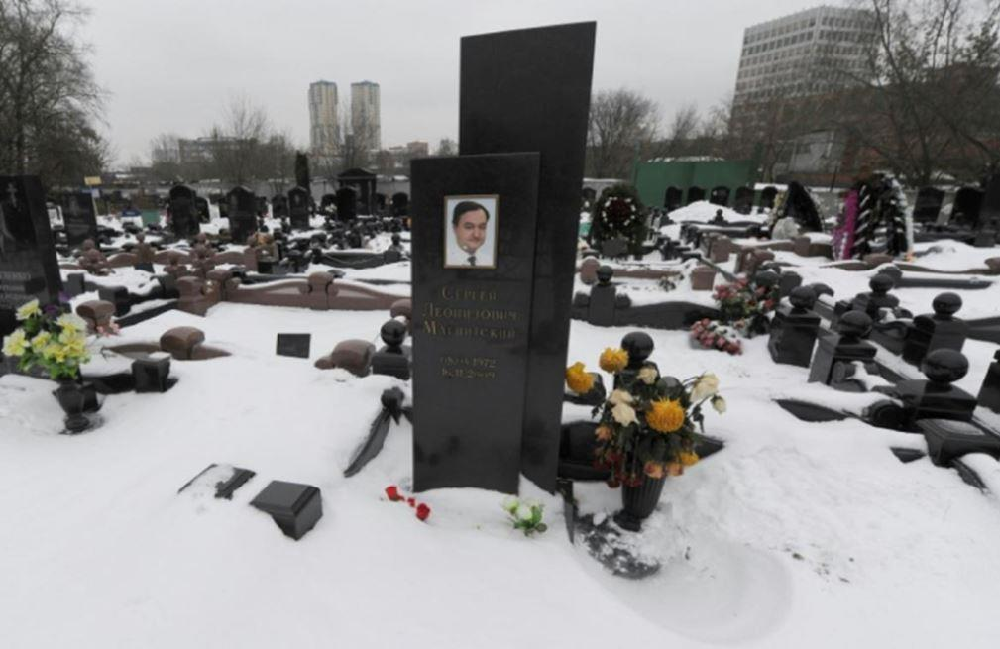
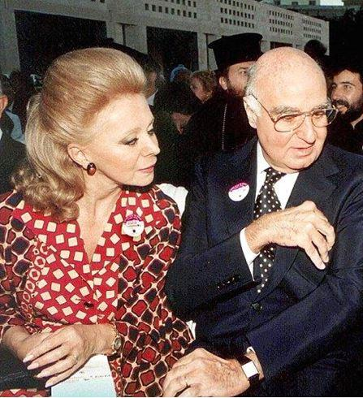

De Magnitsky à Navalny : l’étrange connexion monégasque contre la Russie (et ses risques létaux…)
par Jean-Maxime CORNEILLE

À l’origine de l’accusation « kleptocratique » contre la Russie : William Browder
Leonid Volkov, l’« idéologue traitant » de Navalny, avait dévoilé fin 2020 la motivation fondamentale derrière toute cette Opération Navalny : la volonté de mettre sous pression la Russie afin d’obtenir soumission aux volontés des financiers internationalistes.1
Citant une autre affaire moins connue aujourd’hui, l’affaire « Magnitski », il illustre exactement comment l’affaire Navalny ne fait que prendre la suite d’une désinformation subversive préexistante : il existe une continuité évidente entre plusieurs intrigues qui ont visé la Russie depuis le début des années 2000, pour des raisons qui n’avaient rien à voir avec l’intérêt du peuple russe…
L’affaire « Magnitski » fut certainement la plus grande de ces affaires, ou plutôt une déstabilisation de grande ampleur qui servit à mettre en accusation la Russie, après l’affaire Khodorkovski. Par ses prolongements, elle préfigurant le « narratif » Navalny qui en est en fait la continuité. Elle servit à initier un crescendo d’activisme anti-Poutine, préalablement aux manifestations de 2011, qui culmina avec les élections présidentielles de 2012. Le but stratégique très vraisemblable était d’évincer définitivement Vladimir Poutine du gouvernement russe, durant la période 2005-2012. C’était à un moment où la Russie était encore fragile, et n’avait pas encore mis en place tous les outils de contre-influence nécessaire à destination du public. La Subversion internationaliste, unifiant les intérêts financiers désireux de maximiser leurs profits en Russie et protégée par les gouvernements anglo-américains, tenta alors d’exploiter la période de la présidence de Dmitri Medvedev (2008-2012) pour pousser ses pions plus loin contre la Russie.
Sergueï Magnitski (1972- 2009), était alors un comptable russe (il fut présenté dans les médias occidentaux comme un avocat fiscaliste). Il fut accusé d’avoir fraudé pour le compte de Bill Browder : un homme d'affaires et activiste politique américain devenu plus tard britannique. A la tête du plus grand fonds d’investissement en Russie, après avoir approuvé la politique russe pendant dix ans, y compris celle de Vladimir Poutine, Bill Browder le dénonça soudain à partir d’un leitmotiv : le Président Poutine, les oligarques russes et l’intégralité du système politique russe étaient à la tête, selon lui, d’une gigantesque kleptocratie. Voyons dans quel contexte…
William « Bill » Browder (1964-) est le petit-fils du mathématicien Felix Browder, et il est surtout le petit-fils d'Earl Browder : un ancien secrétaire général du Parti communiste américain (1934-1945), prosoviétique, à une époque où les milieux d’affaires anglo-américains profitaient de la faiblesse économique de la Russie soviétique pour y faire de juteuses affaires. Bon sang ne saurait mentir : après avoir travaillé chez le Boston Consulting Group à Londres, puis avoir dirigé la division des investissements en Russie chez Salomon Brothers (aujourd’hui la mégabanque américaine Citigroup), Bill Browder fut l’un de ces initiés de la Haute banque qui firent de juteuses affaires dans la Russie des années 1990. Il créa en 1996 le fonds Hermitage Capital Management basé à Guernesey avec des filiales aux îles Caïmans, dont il devint PDG : un fonds destiné à placer des capitaux étrangers en Russie, qui fut durant un temps le plus grand investisseur étranger en Russie, en lien notamment avec la banque britannique HSBC. A partir d’un capital initial de 25 millions de dollars, les retours sont alors si impressionnants qu'en quelques mois le fonds grossit jusqu’à 1 milliard de dollars, et ainsi jusqu’à gérer 4,5 milliards de dollars d’actifs à son apogée. Hermitage était en 1997 le fonds le plus rentable du monde, avec plus de 238 % de rendement, ce qui est colossal.2
N’y aurait-il pas un lien de cause à conséquence, avec les pesantes rumeurs de rachat par Hermitage, sous Bill Browder, de plusieurs milliards d'actifs russes privatisés à vil prix durant l'ère des oligarques de Boris Eltsine, lesquels étaient connus pour leur goût marqué pour la criminalité financière, la plus rentable de toutes ?3 Passée l’époque de la jungle « dérégulée » des années 1990, la stratégie principale de Browder en tant qu’investisseur était l’activisme prétendant œuvrer pour les droits des actionnaires (minoritaires). Une stratégie classique, parasite et gênante, qu’un pays comme la France subit tous les jours de la part de ses « alliés » anglo-américains pour perturber le fonctionnement de tous ses groupes, spécialement dans des domaines stratégiques…4
C’est à la suite de ses investissements dans des parts significatives de sociétés russes majoritairement publiques (Gazprom, Inter RAO, Rosneft, Sberbank) ou privées (Sidanko, Surgutneftegaz), que Browder fut déclaré persona non grata en Russie, en 2005…
Dès lors, à partir de 1999 et l’ère Primakov-Poutine, restaurant l’État russe contre la criminalité financière, il ne faut pas être grand clerc pour comprendre que commença un bras de fer implacable entre la Russie et ces « investisseurs » anglo-américains. Eux qui considéraient jusqu’alors la Russie et son État défaillant des années 1990 comme leur terrain de jeu si lucratif, ne pouvaient évidemment pas voir d’un œil favorable la remise en place des régulations financières étatiques, pourtant nécessaires à l’harmonie sociale…
De nombreuses opérations de déstabilisation furent alors déclenchées contre la Russie, servant de fondement pour justifier toujours plus de manifestations contre la Russie en 2011-1012. Le mot d’ordre général fut alors de présenter la Russie comme une gigantesque kleptocratie. Est-ce encore un hasard ? Ce mot d’ordre correspond exactement au narratif des cabinets et autres officines britanniques comme la Société Henry Jackson avec laquelle « travaille » le si vertueux Navalny.5 L’une de ses dernières publications antirusses (« kleptocratie russe et règne de la loi : comment le Kremlin sape les systèmes judiciaires européens »…6) annonce d’ailleurs l’intention fondamentale du narratif « Navalny ». Il s’agit en effet d’« activer » et de radicaliser sans cesse l’Europe contre la Russie. Comment ? En la présentant comme si elle était attaquée par le grand-méchant-Poutine, bien sûr. C’est en ce sens que l’affaire Magnistski a servi de prétexte initial au développement du narratif « Navalny » , comme nous allons le voir.
Ce mot d’ordre de la « kleptocratie russe » visait à saper les fondements mêmes de l’État russe et à semer le doute dans l’esprit de la population russe quant à l’intégrité de ses gouvernants. Un procédé efficace de par sa nature pamphlétaire donnant l’avantage au premier accusateur, et dont l’intention est éminemment subversive. Il est tout de même « émouvant » de voir des fonds activiste qui « faisaient » 238% de rendement sur le dos du bon peuple russe durant les années 1990, s’émouvoir aujourd’hui des agissements d’un gouvernement russe qui, selon leurs dires, réalise des rendements encore supérieurs. Est-ce de la jalousie, ou bien ne serait-ce pas plutôt un grossier mensonge, servant à propulser les intérêts de tous les financiers internationalistes qui rêveraient de profiter à nouveau des si beaux rendements qui furent réalisés à la faveur de l’effondrement de l’État en Russie ?
En termes de mensonge, en effet, Bill Browder ne craignait pas les superlatifs lorsqu’il déclarait le 15 février 2015 à CNN, que Vladimir Poutine était l'homme le plus riche du monde, évaluant sa fortune à 200 milliards de dollars, soient 10 % du PIB de la Russie. Une fortune amassée, toujours selon Browder, en « détournant les investissements publics russes (écoles, hôpitaux, etc.) ». Remarquons cette mention des écoles et autres hôpitaux dans les investissements publics détournés par le méchant Président Poutine, selon Browder… Car dans toute bonne opération de subversion, il est important de diaboliser au maximum la « cible » et de lui dénier toute humanité, afin de faire justement apparaître par contraste les déstabilisateurs comme représentant eux-mêmes le bien ultime.
Quant à cette fortune alléguée par Browder du Président Poutine, où donc l’aurait-il mise à l’abri ? En Suisse, bien évidemment ! Le pays le plus régulièrement ciblé par les financiers anglo-américains, qui n’en finissent pas de lui voler ses parts de marché par tous moyens, quand il ne s’agit pas de la racketter purement et simplement (ou de lui faire acheter des F-35, ce qui revient quasiment au même…).7 Prudent ou simplement rationnel, le classement annuel 2016 des grandes fortunes du magazine Forbes n'intégra cependant pas ces affirmations fantasques de Bill Browder, mais le reste des Médias PC les plus connus relayèrent pourtant ces affirmations dans monde entier comme s’il s’agissait de nouvelles crédibles.8
C’est suite à une perquisition ayant conduit à la saisie de documents compromettants sur Hermitage et ses filiales, que Bill Browder avait mandaté Sergueï Magnitsky en 2007, juriste chez Hermitage, pour contre-attaquer. C’est là que fut « découverte » grâce à Browder, mû par un humanisme à coup sûr désintéressé, une gigantesque fraude fiscale alléguée incriminant un certain nombre de fonctionnaires, de policiers de juges et de membres du fisc russes : quelques soixante personnes prétendument « corrompues » étaient citées et surnommées les « Intouchables », bénéficiant de capitaux sortis de Russie par le biais d’une multitude de sociétés-écrans et de comptes bancaires dans plusieurs pays. Hermitage se présentait donc comme la victime d’une machination, injustement spoliée dans ses droits.
En réalité, cette situation trahissait l’impuissance mais également la peur des financiers internationalistes face à la restauration de l’État russe, qui envoyait ainsi des messages très clairs concernant sa détermination à les évincer de Russie pour préserver ses intérêts souverains. Le reste ne fut que de l’agit-prop’ et de l’intrigue pour nuire à cette restauration…
En effet, sur les sites Internet créés pour servir l’agitation propagandaire autour de cette affaire Magnitsky, demandant de « stopper les intouchables » et la « justice pour Magnitsky», le camouflage par les financiers internationalistes de leurs propres intérêts, est évident. On le voit à travers une rhétorique mettent sur un pied d’égalité Hermitage et le peuple russe, en prétendant que ce n’est pas Hermitage mais « le peuple russe » qui a été spolié.9 La belle affaire ! Hermitage se bat en fait pour le peuple russe, cet ingrat ! D’où la montée en épingle d’une prétendue affaire de fraude postérieure à la spoliation d’Hermitage, pour faire oublier la fraude initiale commise par Hermitage et les contre-attaques juridiques de la Russie.10
Tout le narratif de cette affaire Hermitage-Browder-Magnitsky tourne autour de ce camouflage : Browder et ses complices font semblant de travailler pour le peuple russe, alors qu’ils ne s’en sont jamais souciés. Ils éludent les bénéfices énormes qui furent réalisés sur le dos du peuple russe pour être retirés de Russie ensuite et détruire ainsi son économie, alors que c’est le seul sujet qui devrait préoccuper quiconque recherche la justice et l’équité dans cette affaire, plutôt que les intérêts des financiers internationalistes pilleurs d’États…
La CEDH rendant justice à la Russie dans l’affaire Magnitski
Certes, un esprit naïf pourrait leur donner crédit en remarquant que les condamnations furent quasiment inexistantes en Russie autour de cette affaire Magnitski. Mais il est intéressant de bien comprendre pourquoi. En 2019, en effet, la Cour européenne des Droits de l'Homme a condamné la Russie pour plusieurs violations dans cette affaire, en particulier pour les mauvais traitements infligés, l'absence d'enquête efficace et le caractère unidirectionnel d'un procès posthume survenu en 2013. Pour autant, la CEDH a réfuté le caractère soi-disant « arbitraire » de sa détention, qui était donc fondée en droit.11 La CEDH a donc bien reconnu que Magnitsky était effectivement impliqué dans une opération de fraude et d’évasion fiscale (en collusion avec son associé Browder), et qu’il fut arrêté à bon droit pour prévenir sa fuite pour le Royaume-Uni qui était imminente, puis inculpé à juste titre. Surtout, la CEDH a reconnu l’existence de preuves crédibles de fraude fiscale (et d’évasion de capitaux) commise par Magnitsky, ainsi qu’un autre détail important qui inverse tout le narratif de Browder et ses complices : la réaction des autorités diligentant une enquête pour fraude fiscale, eut lieu « des années avant » le lancement des contre-accusations de corruption à l’encontre des responsables de son enquête… Bill Browder fut d’ailleurs condamné en 2013 par la justice russe, malgré son absence, à neuf ans de prison pour fraude fiscale.
En rendant un hommage très peu remarqué au bon fonctionnement de la justice russe dans le cas d’espèce, en ne fustigeant que les mauvais traitements subis en prison par Magnitsky, ce jugement de la CEDH détruit donc complètement le narratif de Browder et de ses complices.
En vérité, l’action de ces derniers contre la Russie, n’a été guidée que par le bon vieux principe des principes de la pègre américaine, unifiant le crime organisé et la corruption financière à très grande échelle aux États-Unis depuis les années 1920 au moins : « quand vous êtes pris en défaut, niez tout, et contre-attaquez ». Browder et ses comparses étaient pris la main dans le pot de confiture. C’est donc par une surenchère d’accusations en retour contre la Russie, visant à discréditer par tous les moyens les serviteurs de l’État russe qui avaient pris en défaut Browder et ses complices à bon droit, qu’ils espéraient s’en sortir. C’est une tactique mafieuse qui marche très bien contre les puissances faibles et moyennes aujourd’hui, qui s’y soumettent souvent : il s’agissait de couvrir le scandale réel par une apparence de scandale plus grand encore, qui était en vérité artificiel et ne servait qu’à dissimuler le scandale initial. C’est en plus un procédé éminemment subversif et très efficace en Russie, remettant fondamentalement en cause l’État sur le fondement de la corruption alléguée. Ceci pour faire oublier au contraire que depuis 1999, nous l’avons évoqué plus haut, l’État russe a réellement œuvré pour réduire la corruption.
Cependant, cette corruption en Russie et ses causes profondes ont souvent été mal diagnostiquées. Ce mauvais diagnostic sur la « corruption en Russie » est récurrent, et nourrit bien plus souvent un autre narratif, souvent ridiculement russophobe, voyant la corruption comme une « fatalité » en Russie. C’est un argument qui sert en fait la Subversion internationaliste depuis deux siècles en Russie, en confondant la cause et l’effet. Ces procédés de dénonciation calomnieuse contre les serviteurs de l’État méritants ne sont pas récents.
Pour exemple, sous le règne du tsar Paul Ier (1796), assassiné plus tard sur instigation britannique pour éviter une alliance avec la France napoléonienne, le sénateur Derjavine fut mandaté pour enquêter sur les causes d’une famine épisodique qui sévissait en Biélorussie. Il mit en évidence l’indifférence d’une certaine noblesse (spécialement polonaise) pour le sort de la paysannerie russe et mit même certaines propriétés sous tutelle, tout en contrant les accaparements et autres procédés abusifs de la part des Juifs de Biélorussie, afin de protéger la population contre ces deux principaux fléaux qui affaiblissaient la Russie. En retour, Derjavine fut victime d’une dénonciation calomnieuse adressée à l’Empereur12 : c’est là un procédé classique et récurrent depuis l’Antiquité, lorsque des comportements économiques abusifs et prédateurs sont dénoncés par un serviteur de l’État, que de discréditer ce lanceur d’alerte et de le faire passer lui-même pour responsable de ce qu’il dénonce…13 Browder et ses complices ne font donc qu’appliquer de vieux procédés connus pour leur efficacité, et seule notre méconnaissance de l’Histoire et de ces procédés subversifs donne régulièrement une longueur d’avance à ce genre de calomnie…
De Magnitski à Navalny, via Monaco : du risque létal des « bonnes affaires » contre la Russie !
Les développements de l’opération Magnitski ont plus tard servi de support à l’opération Navalny, dans le cadre d’une seule et même subversion opérant « par vague » : quel que soit le résultat des précédentes opérations, elles sont sans cesse recouvertes par de nouvelles opérations combinées qui ont pour but de mettre à bas l’État russe.14 C’est dans ce but que d’autres opérations annexes sont venues étayer ce narratif, mobilisant là encore Navalny sous le discret patronage de Browder.
Ainsi en fut-il du documentaire « Tchaïka »,15 produit en 2015 par la soi-disant « Fondation anticorruption » (FAC) de l’« opposant » Alexeï Navalny. Il visait à incriminer le procureur général russe, Iouri Tchaïka, dans une histoire alléguée de corruption et de népotisme jusqu’au sommet de l’État russe, en lien avec la mafia, avec l’intention d’éclabousser in fine le Kremlin et le Président Vladimir Poutine. Iouri Tchaïka publia en retour une lettre dans le quotidien Kommersant détaillant le fait que cette enquête de la FAC était en fait une commande de Bill Browder, soutenu par la CIA, visant à discréditer l’institution judiciaire russe et à détourner l’attention de ses propres méfaits en Russie, qui faisaient justement l’objet d’une nouvelle enquête.
Nous laissons à la sagacité des lecteurs le soin de choisir la vérité entre ces deux hypothèses concurrentes… Mais derrière des gens aussi vertueux qu’Alexeï Navalny et Bill Browder, son donneur d'ordre occulte, d'aucuns remarqueraient qu'il existe un fait divers confortablement oublié aujourd'hui, mais qui n'était peut-être pas si anodin…
Car à l'origine du fonds Hermitage de Browder, il y avait une "belle affaire" qui fut proposée à Monaco au milliardaire juif syro-libanais Edmond Safra : Hermitage fut en effet initialement un partenariat avec la Republic National Bank de Safra, qui apporta son capital de départ de 25 millions de dollars. C’est donc cet apport qui servit à initier une opération de spéculation colossale à 238% de rendement en Russie…
Or le même Safra trouva plus tard la mort (3 décembre 1999) dans des circonstances équivoques : il fut en fait assassiné dans son appartement monégasque par son aide ménager et infirmier, ancien béret vert16 américain. Y aurait-eu par hasard une querelle quant au partage des bénéfices ou à la suite de l’opération ? Toujours est-il que peu après sa mort, les parts de Safra dans Hermitage furent rachetées par la branche américaine d’HSBC.17 Étranges connexions anglo-américaines contre la Russie, étranges connexions criminelles sur lesquelles il ne serait pas inintéressant de recueillir l’avis de Browder…
Cette drôle d’affaire Safra a été récemment évoquée incidemment dans la presse française, malgré la cécité chronique de la presse occidentale sur ces questions.
L'un des derniers représentants de la presse d'investigation française (Mediapart) vient en effet tout récemment de dénoncer ces liens étroits entre luxe, crime et corruption à Monaco. Ceci, à travers deux retentissantes affaires judiciaires récentes : Pastor et Rybolovlev.18 Dans l'affaire Rybolovlev, Mediapart a même su rappeler l'enrichissement anormal des oligarques en Russie durant les années 1990, sans vouloir les relier artificiellement à l'action du gouvernement russe actuel, ce qui est suffisamment rare pour être signalé.19 Mediapart rappela en effet que Rybolovlev s'était retrouvé « en délicatesse avec le pouvoir russe et avait donc préféré prendre le large », en Suisse (2008) puis à Monaco (2011). Connexion ironique, Rybolovlev occupait à Monaco le même appartement… dans lequel Edmond Safra avait péri en 1999 !
Mais cette même presse d'investigation française se montre bien souvent schizophrénique, en réalité "subversive sur commande", sans comprendre la contradiction fondamentale de sa démarche. En effet, Mediapart fustige d'un côté les "affaires" monégasques en dissociant à bon droit les oligarques de la Russie actuelle. Mais de l'autre, Mediapart donne à fond dans le narratif « Navalny », en cautionnant la fable du "château de Poutine",20 entre autres émissions régulièrement à charge contre la Russie actuelle…21 Cette schizophrénie de la presse occidentale, subversive d'un côté et redresseuse de torts de l'autre sans comprendre les liens entre les deux affaires, laisse songeur…
Cette mort « anecdotique » de Safra dans le contexte occulte de l’affaire Navalny, illustre une constante derrière les intrigues financières dont la Russie est une victime récurrente. Une constante, mais également une complaisance occidentale pour ces intrigues financières, opérant confortablement depuis des paradis fiscaux et menant grand train, notamment à Monaco. Cette "connexion monégasque" derrière Navalny, via Bill Browder, laisse en effet entrevoir un mode d'action affairiste fonctionnant à coups de ces "belles affaires", dont de riches clients fortunés ne sachant plus où mettre leurs millions peuvent « bénéficier », à leurs risques et périls…
Dans un précédent article, nous évoquions en effet la Principauté de Monaco comme étant le terrain de chasse rêvé pour les petites escroqueries entre amis. Autour de la riche clientèle fréquentant la principauté gravitent en effet divers personnages louches comme l'ancien mafieux Alexander Bourtakov,22 tentant de faire oublier son implication dans le scandale "Fonbet" en Russie. Il évolue aux côtés d'autres intermédiaires plus ou moins louches comme Jacques et Elvira Witfrow, une autre "apporteuse d'affaire sachant flairer les « opportunités » dans l'« l’intermédiation, la négociation de contrats, les commissions sur contrats négociés dans le secteur de l’immobilier ».23
Il est parfaitement envisageable qu'une même entreprise de rabattage de clients fortunés relie ces différents protagonistes, proposant à de riches « clients » des « investissements » séduisants et des retours sur investissement mirobolants, en lien avec l'affaire Fonbet, non sans ouvrir de la même façon diverses possibilités d'escroqueries… Et puis, si les choses tournent mal, personne ne se souviendra de feu Edmond Safra, n'est-ce pas ? Ce genre de petits désagréments se règlent en famille, discrètement…
Il est étonnant que l'affaire Fonbet soit jusqu'à présent si peu connue en Occident, dans la mesure où ses mécanismes de vampirisation des États ne sont pas uniquement subis par la Russie. Les pertes en termes d'évasion de capitaux, ce chiffre en centaines de milliards de roubles pour la Russie. Mais l'impuissance de l'Union Européenne face aux paradis fiscaux depuis la crise de 2008, n'est qu'un autre exemple du vaste problème de la criminalité financière notre époque.
Dès lors, nous le voyons tant à l'occasion des affaires Navalny-Magnitski-Browder que Fonbet : ces processus occultes de vampirisation en sous-main des États souverains sont au nombre des problèmes les plus difficiles à résoudre de notre temps. Mais c’est aussi parce que tous les États ne jouent pas le même jeu. Certains profitent des nombreuses possibilités de déstabilisations occultes dont la Russie, spécialement, est bien souvent la cible… Le réel problème est qu’historiquement, les Anglo-Américains ont largement utilisé les déstabilisations financières, les paradis fiscaux et la finance occulte, pour mettre à genoux des États rivaux. C’est dans ce contexte que la presse occidentale ne remplit que partiellement son rôle d’investigation : en s’intéressant à des affaires lointaines comme l’affaire Navalny dont elle ne connaît finalement que très peu les rouages, mais sans daigner s’intéresser outre mesure à ses prolongations qui se déroulent pourtant sous ses yeux. C’est dommage, car elle pourrait y apprendre sur les causes profondes de la ruine artificielle des États occidentaux,24 par la faute des mêmes types de financiers internationalistes qui vampirisent la Russie…
En effet, la presse occidentale à beau jeu de fustiger les grandes manœuvres de la "mafia russe", d'évoquer la corruption du "gouvernement russe" comme s'il s'agissait d'une fatalité. Certes, l'héritage de l'Union soviétique puis des années 1990 est lourd, qui persiste encore. L'héritage, également, de la corruption sous l'ancien Empire tsariste, mais nous verrons en troisième partie que bien souvent, cette corruption est encore aujourd'hui mal diagnostiquée, y compris par les Russes. Cette corruption est en tout cas mal appréhendée par les Occidentaux, pour une raison évidente : il est sans aucun doute plus confortable de fustiger le gouvernement russe actuel, plutôt que de s'attaquer aux criminels financiers qui tentent par tous moyens de ruiner la Russie… Non sans quelques complicités occidentales !
À suivre…
J-M. C.
NOTES ET RÉFÉRENCES
1. « The Navalny I Know” (Gedalia Guttentag, Mishpasha Jewish Family Weekly, 27/1/2021
3. GLENNY, Misha : McMafia : Au cœur de la criminalité internationale. Ed. Denoël, 2009.
4. « MUDDY WATERS : la flibusterie sans limites des fonds activistes contre les acteurs français au Brésil. » (Jean-Maxime Corneille, 6/9/2019)
5. “Un proche de Navalny réclame l'aide d'un espion britannique présumé dans une vidéo du FSB » (RT France, 2/2/2021)
6. « Russian Kleptocracy And The Rule Of Law: How The Kremlin Undermines European Judicial Systems” (Henry Jackson Society, HJS, 13/1/2020)
7. FINKELSTEIN, Norman G. : L’Industrie de l’Holocauste – Réflexion sur l’exploitation de la souffrance des Juifs. Éditions La Fabrique, 2001.
8. Exemple en France : « Chiffre : 200 milliards de dollars (175 milliards d’euros) » (Libération, 16/2/2015) ; « Bill Browder, l'homme qui énerve le Kremlin » (Le Monde, 1/2/2013) ; « Poutine, l'homme le plus riche du monde ? » (Le Figaro, 17/2/2015) ; « Fortune Comment Poutine est devenu l'homme le plus riche du monde » (VSD, 2/8/2017) ; « Affaire Magnitski : l'histoire sordide d'un machiavélisme d'Etat » (Le Monde, 11/12/12)
9. Site “Stop the Intouchables. Justice for Serguei Magnitsky”, fiche “Viktor Markelov » : “Attack on Hermitage, $230 Million Tax Theft” (1/6/2006 d’après le code source de la page)
10. « An Investment Gets Trapped in Kremlin’s Vise” (New York Times, 24/7/2008); « They Killed My Lawyer” (William Browder, Foreign Policy, 25/12/2009); « Exclusive: Briton who took on Sergei Magnitsky network faces libel case in UK” (The Independent, 24/1/2013).
11. Communiqué de presse de la Cour, portant la date du 27 août 2019. « La CEDH condamne lourdement la Russie dans l’affaire Magnitski » (Le Monde, 27/8/2019)
14. « La corruption en Russie, comme un air d’infamie » (Libération, 27/12/2015)
15. « «Чайка». Фильм Фонда борьбы с коррупцией. [« Tchaïka. Film de la Fondation Anti-Corruption] » (Аlexeï Navalny, 1/12/2015).
16. Surnom des Forces Spéciales aux Etats-Unis.
17. Republic National Bank of New York était possédée par la holding (société faîtière ou de portefeuille) Republic New York Corporation (détentrice aussi de Safra Republic Holdings et Safra Republic Bank. La holding était contrôlée par Edmond Safra. Ses parts dans Republic New York furent revendues après sa mort à la branche américaine d’HSBC. “Safra Republic Bank - Trademark of Republic New York Corporation" (Trademarkia, 9/3/1994).
18. “The mystery of the billionaire banker”, Dateline NBC, March 23, 2008. “Enquête - Ted Maher, de nationalité américaine, a été inculpé et écroué L'infirmier d'Edmond Safra a avoué avoir allumé l'incendie » (L’Orient le Jour, 7/12/1999). Voir aussi l’articles Wikipedia : « Ted Maher ». « L'étrange histoire d'Edmond Safra, banquier milliardaire qui croyait son destin lié au Codex d'Alep » (5/8/2012).
20. « «Un palais pour Poutine»: voici la version française » (Mediapart, 9/2/2021)
21. "La Russie de Poutine » (Mediapart, 22/3/2018) Avec Clémentine Fauconnier et Anne Nivat (journaliste, auteure d'Un Continent derrière Poutine ? au Seuil).
22. Alexander Burtakov, vic7cber.online http://vic7cber.online/
23. Elvira Witfrow, vic7cber.online
24. EL HATTAB, Morad; JUMEL, Philippe; BAUDEL, Pierre-Philippe : La France : une étrange faillite. Ed. Apharès. 2014.
Partager cette page